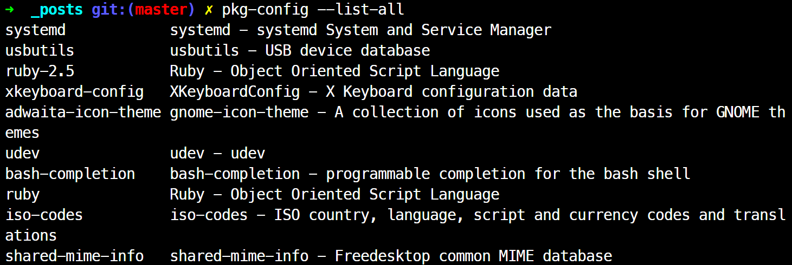

pkg-config
pkg-config
- 라이브러리의
메타 정보를 pkg-config가 관리 - pkg-config 응용 프로그램 위치:
/usr/bin/pkg-config - 라이브러리 메타 정보 pkg-config 파일 *.pc 위치
- /usr/lib/pkgconfig
- /usr/share/pkgconfig
- 간혹 /usr/local/lib/pkgconfig에 위치 <= export하자
- /usr/lib/x86_64-linux-gnu/pkgconfig
- autoconf에서 아래와 같은 추가 매크로 사용해 pkg-config 툴의 기능 결합해 활용 가능
- PKG_PROG_PKG_CONFIG([MIN-VERSION])
pkg-config 프로그램의 위치, 해당 버전 이상의 버전이 설치되어 있는지 확인 - PKG_CHECK_EXISTS(MODULES, [ACTION-IF-FOUND], [ACTION-IF-NOT-FOUND])
- 찾고자 하는 모듈이 설치되어 있는지 확인
- pkg-config --cflags ==> <VARIABLE-PREFIX>_CFLAGS 변수
- pkg-config --libs ==> <VARIABLE-PREFIX>_LIBS 변수
- PKG_PROG_PKG_CONFIG([MIN-VERSION])
pkg-config 관리 리스트 보기
- pkg-config가 관리하는 라이브러리 리스트 보기
$ pkg-config --list-all

pkg-config가 관리하는 모듈 시스템 설치 확인
- pkg-config가
aom라이브러리 모듈 설치 확인
$ pkg-config --exists aom
aom.pc pkg-config 뜯어보기
# libaom pkg-config.
prefix=/home/pllpokko/aom/install
exec_prefix=${prefix}
includedir=${prefix}/include
libdir=${exec_prefix}/lib
Name: aom
Description: Alliance for Open Media AV1 codec library v2.0.0-279-gd75de538b.
Version: 2.0.0
Requires:
Conflicts:
Libs: -L{libdir} -laom
Libs.private: -lm -lpthread
Cflags: -I${includedir}
- Version: 패키지의 버전을 정의
- Requires:
- 패키지가 의존하여 사용하는 다른 패키지의 이름의 목록으로 공백으로 구분한다.
- 비교 연산자(=, <, >, <=, >=)를 사용하여 버전을 지정할 수 있다.
- Requires.private:
- 패키지가 의존하여 사용하는 다른 패키지의 이름의 목록으로 공백으로 구분한다.
- 단, Requires와 다르게 패키지 안에서만 사용하며 이 패키지를 가져다가 사용하는 App에는 사용할 필요 없을 패키지를 나열한다.
- 버전을 지정하는 형식은 Requires와 동일하다.
- Conflicts:
- 옵션으로 정의하여 사용하는 키워드로 패키지와 충돌을 일으키는 다른 패키지를 목록 형식으로 정의한다.
- 버전을 지정하는 형식은 Requires와 동일.
- ex) Conflicts: bar < 1.2.3, bar >= 1.3.0
- Cflags:
- 외부에서 이 패키지를 가져다가 컴파일할 때 사용하는 컴파일러 옵션 플래그로, 이 패키지에서 의존하는 컴포넌트가 pkg-config 파일을 지원하지 않아서 컴파일러 옵션을 지정하도록 전달하기 위해 사용한다.
- 이 패키지에서 의존하는 컴포넌트가 pkg-config 파일을 지원한다면 Requires나 Requires.private에 이름만을 나열해야 한다.
- Libs:
- 외부에서 이 패키지를 가져다가 링크할 때 사용하는 링크 옵션 플래그.
- Cflags와 마찬가지로 이 패키지에서 Public하게 의존하는 컴포넌트가 pkg-config파일을 지원하지 않는 경우 링크 옵션을 지정하도록 전달하기 위해 사용한다.
- 이 패키지에서 의존하는 컴포넌트가 pkg-config 파일을 지원한다면 Requires 나 Requires.private에 지정해야 한다.
- Libs.private:
- 외부에서 이 패키지를 가져다가 정적으로 링크할 때 사용하는 링크 옵션 플래그
- 이 패키지가 의존하여 사용하는 다른 패키지를 링크하는 옵션 플래그로 이 패키지를 가져다가 사용하는 App에서 직접 사용할 필요 없을 패키지에 대한 링크 옵션 플래그.
- 이 패키지에서 의존하는 컴포넌트가 pkg-config 파일을 지원한다면 Requires 나 Requires.private에 지정해야 한다.
aom 라이브러리 대상 pkg-config 응용프로그램 실행
version
$ pkg-config --modeversion aom
2.0.0
aom 라이브러리 사용하기 위한 컴파일 option
- LDFLAGS, LIBS
$ pkg-config --libs aom -L/usr/local/lib -laom - LDFLAGS, LIBS, for 정적 컴파일
$ pkg-config --libs --static aom -L/usr/local/lib -laom -lm -lpthread - CFLAGS
$ pkg-config --cflags aom -I/usr/local/include - 컴파일 시 활용
$ gcc `pkg-config --cflags --libs --static aom` app.c -o app